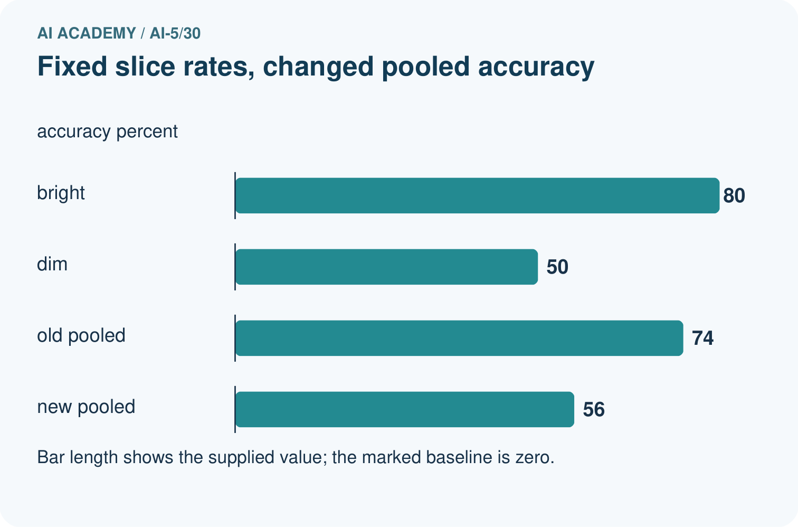
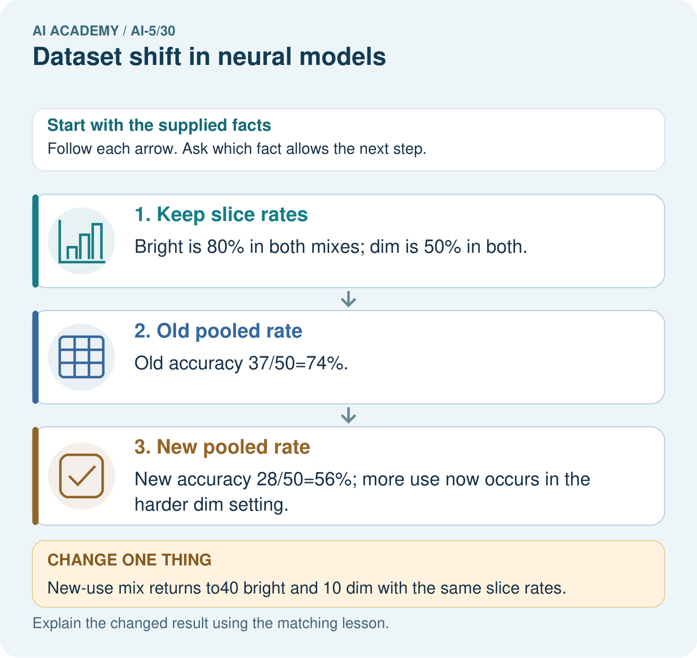
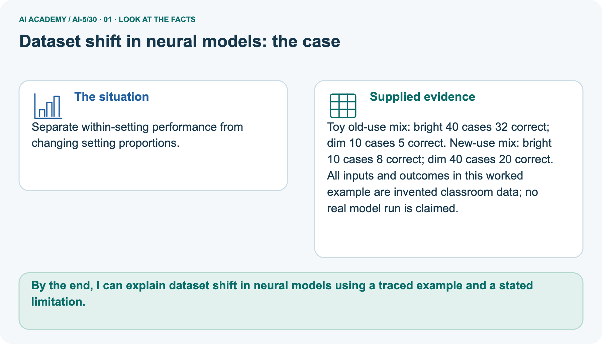
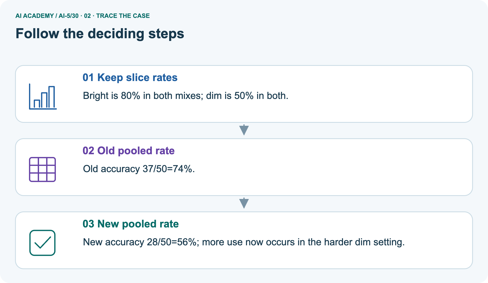
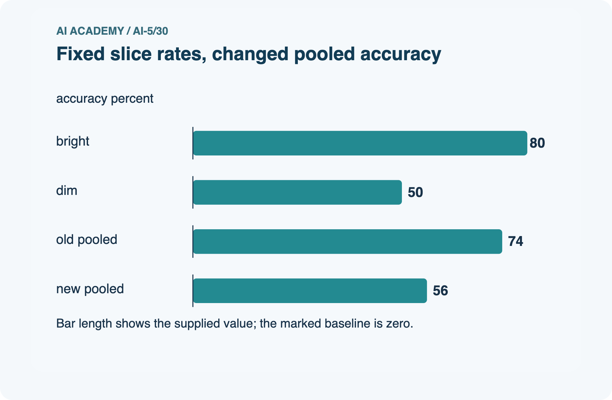
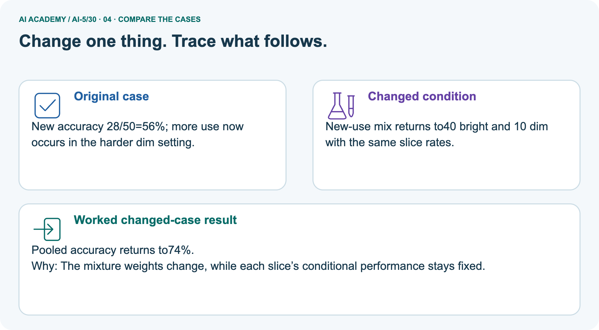
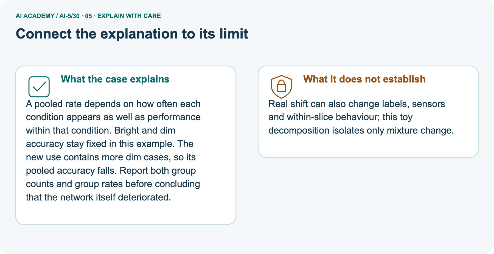
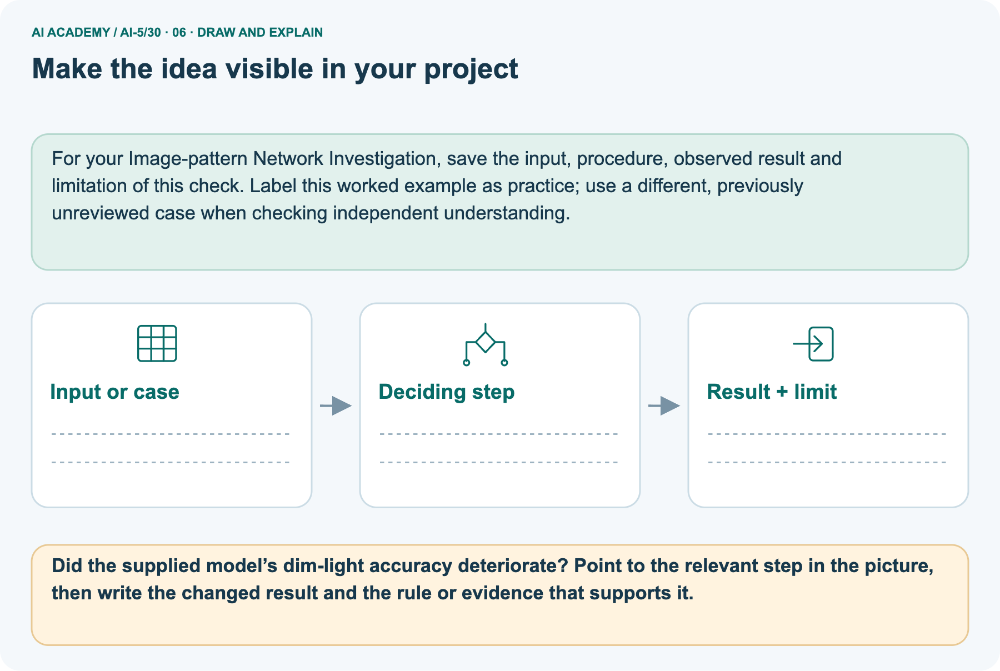

AI Academy · Level 5 · Grade 10 · Week 30 · Workbook
Dataset shift in neural models
Learn to understand, design, build, test and explain AI systems responsibly.
Project: Image-pattern Network Investigation
THE CONNECTED WEEK
One readable shift investigation record.
Retain group definitions, counts, model versions, missing labels and evaluation boundaries.
Keep one habit: Recall → W1–W3/W5 → independent mixture → project monitoring record → delayed return.
Main lesson · Section 1
Recall · Retrieve before notes
Keep this task’s inputs,rule and response together.
Complete task and evidence
Try the recall before opening notes. Then use a different colour or a labelled second line to correct your explanation.
Without opening the old lesson, explain one key idea from Uncertainty and failure analysis. Give an example and a mistake that the idea helps you avoid.
Without opening the old lesson, explain one key idea from Similarity and normalisation. Give an example and a mistake that the idea helps you avoid.
Without opening the old lesson, explain one key idea from Augmentation and leakage. Give an example and a mistake that the idea helps you avoid.
Use this reference for the original W1–W3 and W5 exercises. The separately named independent case supplies its own changed facts; use those facts for that attempt before feedback.
A neural image classifier developed using mostly clear pictures may later receive mostly dim pictures. Its learned weights can stay unchanged while its overall results change.
Dataset shift concerns changes in the data encountered, including inputs, label frequencies or the relationship between inputs and labels.
A shift does not always reduce accuracy, and an accuracy change alone does not identify its cause.
Use the fictional audit below. Clear and dim are disjoint groups defined before the audit, and every case belongs to exactly one group. The same model checkpoint, preprocessing and prediction threshold are used throughout.
Counts are constructed teaching data, not results from a deployed model. Both cohorts have checked reference labels.
Clear accuracy is 72 / 80 = 90 percent in development and 18 / 20 = 90 percent in new use. Dim accuracy is 10 / 20 = 50 percent and 40 / 80 = 50 percent.
The observed group rates are unchanged, but the group proportions are different.
Uncertainty and failure analysis
Similarity and normalisation
Augmentation and leakage
Lesson reference for workbook practice
| Cohort | Group | Cases | Correct |
|---|---|---|---|
| Development audit | Clear | 80 | 72 |
| Development audit | Dim | 20 | 10 |
| New-use audit | Clear | 20 | 18 |
| New-use audit | Dim | 80 | 40 |
Main lesson · Section 5
W1 · Explain the current example
Keep this task’s inputs,rule and response together.
Complete task and evidence
Main constructed disjoint groups, unchanged model/preprocessing: development clear 80 cases/72 correct, dim 20/10; new use clear 20/18, dim 80/40. Clear rate 90% and dim 50% in both cohorts. Development correct 82/100, errors 18; new correct 58/100, errors 42. Drop 24 percentage points. Weighted development .8×.9 + .2×.5 = .82; new .2×.9 + .8×.5 = .58.
Equal-sized 50/50 under these exact assumed rates gives 45+25 = 70 correct of 100. Separate picture: old bright 40/32, dim 10/5 gives 37/50 = 74%; new bright 10/8, dim 40/20 gives 28/50 = 56%. Bright rate is 80%, dim 50%; restoring the old picture mix restores 74% under the same rates. Do not mix the two examples. Without checked new labels, input mix can be monitored but current accuracy is unavailable.
Check versions and label definitions; use new source-group-separated comparisons, preserve the original model and reserve final evaluation after changes. No causal lighting effect is established.
From the table, calculate clear and dim accuracy in each cohort and the clear/dim proportions. Which observed quantities change, and which remain the same?
Main lesson · Section 6
W2 · Trace the calculation
Keep this task’s inputs,rule and response together.
Complete task and evidence
Main constructed disjoint groups, unchanged model/preprocessing: development clear 80 cases/72 correct, dim 20/10; new use clear 20/18, dim 80/40. Clear rate 90% and dim 50% in both cohorts. Development correct 82/100, errors 18; new correct 58/100, errors 42. Drop 24 percentage points. Weighted development .8×.9 + .2×.5 = .82; new .2×.9 + .8×.5 = .58.
Equal-sized 50/50 under these exact assumed rates gives 45+25 = 70 correct of 100. Separate picture: old bright 40/32, dim 10/5 gives 37/50 = 74%; new bright 10/8, dim 40/20 gives 28/50 = 56%. Bright rate is 80%, dim 50%; restoring the old picture mix restores 74% under the same rates. Do not mix the two examples. Without checked new labels, input mix can be monitored but current accuracy is unavailable.
Check versions and label definitions; use new source-group-separated comparisons, preserve the original model and reserve final evaluation after changes. No causal lighting effect is established.
Calculate overall correct counts, accuracy and errors in both cohorts, plus the percentage-point drop. Explain why averaging 90 percent and 50 percent without weights gives the wrong overall result here.
Main lesson · Section 7
W3 · Repair a misconception
Keep this task’s inputs,rule and response together.
Complete task and evidence
Main constructed disjoint groups, unchanged model/preprocessing: development clear 80 cases/72 correct, dim 20/10; new use clear 20/18, dim 80/40. Clear rate 90% and dim 50% in both cohorts. Development correct 82/100, errors 18; new correct 58/100, errors 42. Drop 24 percentage points. Weighted development .8×.9 + .2×.5 = .82; new .2×.9 + .8×.5 = .58.
Equal-sized 50/50 under these exact assumed rates gives 45+25 = 70 correct of 100. Separate picture: old bright 40/32, dim 10/5 gives 37/50 = 74%; new bright 10/8, dim 40/20 gives 28/50 = 56%. Bright rate is 80%, dim 50%; restoring the old picture mix restores 74% under the same rates. Do not mix the two examples. Without checked new labels, input mix can be monitored but current accuracy is unavailable.
Check versions and label definitions; use new source-group-separated comparisons, preserve the original model and reserve final evaluation after changes. No causal lighting effect is established.
New-use monitoring shows more dim images but reference labels have not arrived. What can you report now, what can you not calculate, and what checks should precede blaming the neural network?
Main lesson · Section 9
W5 · Explain the limitation
Keep this task’s inputs,rule and response together.
Complete task and evidence
Main constructed disjoint groups, unchanged model/preprocessing: development clear 80 cases/72 correct, dim 20/10; new use clear 20/18, dim 80/40. Clear rate 90% and dim 50% in both cohorts. Development correct 82/100, errors 18; new correct 58/100, errors 42. Drop 24 percentage points. Weighted development .8×.9 + .2×.5 = .82; new .2×.9 + .8×.5 = .58.
Equal-sized 50/50 under these exact assumed rates gives 45+25 = 70 correct of 100. Separate picture: old bright 40/32, dim 10/5 gives 37/50 = 74%; new bright 10/8, dim 40/20 gives 28/50 = 56%. Bright rate is 80%, dim 50%; restoring the old picture mix restores 74% under the same rates. Do not mix the two examples. Without checked new labels, input mix can be monitored but current accuracy is unavailable.
Check versions and label definitions; use new source-group-separated comparisons, preserve the original model and reserve final evaluation after changes. No causal lighting effect is established.
A team retrains using new-use errors, then evaluates on those same images and their brightened copies. Explain why the score is not independent evidence and propose a comparison that includes the original model.
Main lesson · Section 4
Try alone · Selected transfer
Keep this task’s inputs,rule and response together.
Complete task and evidence
A separate audit has development groups P: 60 cases, 48 correct and Q: 40 cases, 20 correct. New-use groups are P: 20 cases, 16 correct and Q: 80 cases, 40 correct.
Compute each group rate, both overall accuracies, and the percentage-point change. Under the same group rates, what accuracy would equal-sized P and Q groups have?
Attempt this case before feedback. Record any help. Earlier examples below are further practice; a case already practised with feedback cannot establish fresh transfer.
Independent case: Analyse a new mixture independently
Main lesson · Section 10
Project · Keep the mathematical evidence
Keep this task’s inputs,rule and response together.
Complete task and evidence
Add a labelled dataset shift in neural models evidence sheet to Image-pattern Network Investigation. Show how you can explain how a changed input mix can change overall accuracy.
Use the supplied fictional case and keep its inputs, intermediate steps, calculation or prediction, and limitation. Connect this record to last week’s record; a matching answer without a trace is insufficient.
Main lesson · Section 11
Feedback · Repair and return
Keep this task’s inputs,rule and response together.
Complete task and evidence
Revisit this idea with your teacher after a delay. Familiarity is different from explaining and using it on a changed case.
| Evidence | My record |
|---|---|
| Worked alone / hint / model | |
| First step I repaired and why | |
| New case checked later; date and result | |
| What I can now explain without notes | |
| One remaining question |
Reference bank and extra practice
Choose the reference that helps your next step.
Reference · Supported W2 record
Reference · Section 2
Reference · Supported W2 record
Keep this task’s inputs,rule and response together.
Complete task and evidence
Use W2: Use the right denominator for Dataset shift in neural models. Record the answer once; the lesson and workbook refer to the same attempt.
| Given inputs | Procedure I chose | Middle steps | Result and check |
|---|---|---|---|
Extra practice · Individual reasoning check
Reference · Section 3
Extra practice · Individual reasoning check
Keep this task’s inputs,rule and response together.
Complete task and evidence
Use the worked case for Dataset shift in neural models. Proposed explanation: “Average the percentages regardless of group sizes”. Decide whether this explanation is supported.
Point to the step or supplied fact that decides; explain your repair if needed.
Reference · Earlier W4 response copy
Reference · Section 8
Reference · Earlier W4 response copy
Keep this task’s inputs,rule and response together.
Complete task and evidence
A separate audit has development groups P: 60 cases, 48 correct and Q: 40 cases, 20 correct. New-use groups are P: 20 cases, 16 correct and Q: 80 cases, 40 correct.
Compute each group rate, both overall accuracies, and the percentage-point change. Under the same group rates, what accuracy would equal-sized P and Q groups have?
Extra practice · Pictured case
Reference · Section 12
Extra practice · Pictured case
Keep this task’s inputs,rule and response together.
Complete task and evidence
Separate within-setting performance from changing setting proportions.
Toy old-use mix: bright 40 cases 32 correct; dim 10 cases 5 correct. New-use mix: bright 10 cases 8 correct; dim 40 cases 20 correct.
All inputs and outcomes in this worked example are invented classroom data; no real model run is claimed.
Did the supplied model’s dim-light accuracy deteriorate? Point to the relevant step in the picture, then write the changed result and the rule or evidence that supports it.
Support used: alone / hint / worked example. This record is practice evidence.
Project connection: For your Image-pattern Network Investigation, save the input, procedure, observed result and limitation of this check.
Label this worked example as practice; use a different, previously unreviewed case when checking independent understanding.






Reference · Project milestone
Reference · Section 13
Reference · Project milestone
Keep this task’s inputs,rule and response together.
Complete task and evidence
Project: Image-pattern Network Investigation
Current milestone: Prepare the demonstration. Gather reproducible instructions, evidence, access checks and remaining limitations.
For your Image-pattern Network Investigation, save the input, procedure, observed result and limitation of this check.
Label this worked example as practice; use a different, previously unreviewed case when checking independent understanding.
| Evidence to keep | My record |
|---|---|
| This week’s input and deciding step | |
| Prediction and actual result (or labelled paper trace) | |
| One change since the previous checkpoint and why | |
| One error or limit and the next test |
Extra practice · Predict,check and repair
Reference · Section 14
Extra practice · Predict,check and repair
Keep supported feedback separate from the independent case.
First supported question and optional hint
Separate within-setting performance from changing setting proportions.
Which labelled step matches this detail? New accuracy 28/50=56%; more use now occurs in the harder dim setting.
1. New pooled rate
2. Keep slice rates
3. Old pooled rate
Hint if needed: Read the steps in the pictorial case. Match the supplied detail to the stage that performs or records it.
Practice 1: explain the deciding evidence
Check after the first attempt
After your attempt, compare with the supported explanation: New pooled rate New accuracy 28/50=56%; more use now occurs in the harder dim setting.
A pooled rate depends on how often each condition appears as well as performance within that condition. Bright and dim accuracy stay fixed in this example. The new use contains more dim cases, so its pooled accuracy falls.
Report both group counts and group rates before concluding that the network itself deteriorated.
Changed-case question and optional hint
Changed-case practice: New-use mix returns to40 bright and 10 dim with the same slice rates. Which conclusion is supported by the supplied facts?
1. This one example guarantees correct results for every future input.
2. Pooled accuracy returns to74%.
3. We can decide the result without examining the changed input or the procedure.
Hint if needed: Use the changed condition and the deciding step in the pictorial trace. The answer must say what follows from those facts.
Practice 2: explain the deciding evidence
Check after the changed attempt
After your attempt, compare with the supported explanation: Pooled accuracy returns to74%. The mixture weights change, while each slice’s conditional performance stays fixed.
Repair and retain the record
Review Uncertainty and failure analysis (ai-5/29). Goal: Distinguish a predicted class, confidence score and observed correctness. Short practice: What is C’s positive-class probability and chosen-label confidence?
Point to the relevant step in the picture, then write the changed result and the rule or evidence that supports it.. Return to this week and explain what you changed.
Review Similarity and normalisation (ai-5/27). Goal: Calculate vector length and normalise a nonzero vector. Short practice: Why do the original two metrics select different winners?
Point to the relevant step in the picture, then write the changed result and the rule or evidence that supports it.. Return to this week and explain what you changed.
Review Augmentation and leakage (ai-5/24). Goal: Check whether a transformation preserves the task label. Short practice: How many independent source groups are in the final test?
Point to the relevant step in the picture, then write the changed result and the rule or evidence that supports it.. Return to this week and explain what you changed.
The browser lab lets you edit the supported Python examples already included in this lesson. Predict first, run, inspect the actual output or error, change one input, then run again.
Keep code, predictions, actual results and a reasoned revision together. On paper, label your result as a trace rather than an execution.
Use Download completed work in the hosted lesson to export your answers, reflections, practice feedback and code-run evidence. Open the HTML copy to read or print it.
Drafts stay in this browser when storage is available; clear drafts on a shared device.
Earlier wording, alternatives and picture transcripts
Use this supported practice once, in the browser or on paper. Keep the reserved independent assessment for a separate first attempt before teacher feedback.
Repair a missing building block
Predict, run and debug
Keep your completed work
Reference · Six-picture response sheets
Reference · Section 15
Reference · Six-picture response sheets
Choose the picture that helps explain the current step.
01. Dataset shift in neural models: the case



Separate within-setting performance from changing setting proportions. Supplied facts: Toy old-use mix: bright 40 cases 32 correct; dim 10 cases 5 correct. New-use mix: bright 10 cases 8 correct; dim 40 cases 20 correct.
All inputs and outcomes in this worked example are invented classroom data; no real model run is claimed.
Point to the given fact that matters most. Explain why it matters.
02. Follow the deciding steps



Keep slice rates: Bright is 80% in both mixes; dim is 50% in both. → Old pooled rate: Old accuracy 37/50=74%. → New pooled rate: New accuracy 28/50=56%; more use now occurs in the harder dim setting.
Point to each numbered stage and explain which recorded input it uses.
03. Fixed slice rates, changed pooled accuracy



Fixed slice rates, changed pooled accuracy. Units: accuracy percent. bright: 80. dim: 50. old pooled: 74. new pooled: 56.
Read the labels and values. Explain the relationship the model shows.
04. Change one thing. Trace what follows.



Original case: New accuracy 28/50=56%; more use now occurs in the harder dim setting. Changed condition: New-use mix returns to40 bright and 10 dim with the same slice rates. Expected result: Pooled accuracy returns to74%.
Reason: The mixture weights change, while each slice’s conditional performance stays fixed.
Predict before checking the worked changed-case result. Name what changed and what the supplied facts allow you to conclude.
05. Connect the explanation to its limit



A pooled rate depends on how often each condition appears as well as performance within that condition. Bright and dim accuracy stay fixed in this example. The new use contains more dim cases, so its pooled accuracy falls.
Report both group counts and group rates before concluding that the network itself deteriorated.
Limit: Real shift can also change labels, sensors and within-slice behaviour; this toy decomposition isolates only mixture change.
Explain the case, then point to a limit on the claim.
06. Make the idea visible in your project



For your Image-pattern Network Investigation, save the input, procedure, observed result and limitation of this check.
Label this worked example as practice; use a different, previously unreviewed case when checking independent understanding. Draw your input, deciding step, result and limit.
Supported question: Did the supplied model’s dim-light accuracy deteriorate? Point to the relevant step in the picture, then write the changed result and the rule or evidence that supports it.
Draw your project trace and justify the deciding step using evidence.